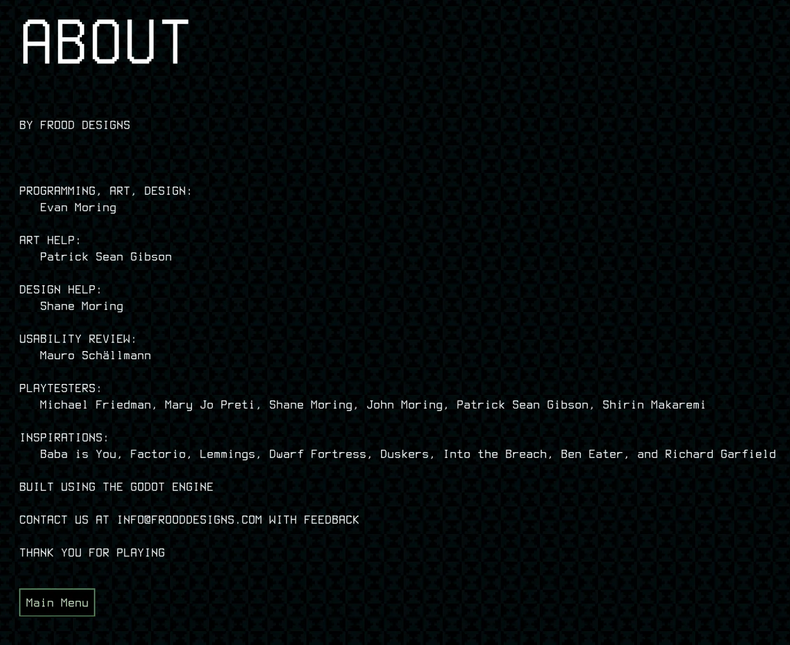

Jam City is an award-winning mobile entertainment company providing unique and deeply engaging games that appeal to a broad, global audience. I had the opportunity to do some moderated playtests to analyze First Time User Experience (FTUE), potential retention barriers as well as the new Growth Guide feature of their game Jurassic World Alive.
The feedback was largely positive, with players praising the realistic graphics and sound effects, user-friendly navigation, and enjoyable location-based gameplay.
However, I identified significant issues, such as players feeling lost after the tutorial, confusion regarding the Growth Guide, and difficulties in arena battles. Players also struggled with understanding the battle and drone mechanics.
"The user research presentation was well-structured, clear, and prioritized,
making it easy to follow for the whole team. The insights were very helpful, allowing us to have
discussions, leading to quick decisions and changes in the game but also prioritize ongoing issues, and
identify new ones. Mauro was proactive and quickly understood the research goals, making collaboration
smooth and time efficient."
- Lucas from Jam City / Ludia
More Game User Research Projects
I wrote a summary about UX Design for Games.
Further, I had the chance to collaborate with 2 indie game studios since I published this summary: Aellyn Studios and Frood Designs.
For Frood Designs, I got to do a couple of Usability Reviews (see credits and trailer below). And I'm happy to announce that I am part of the Aellyn Studios team as a volunteer UX Designer, which is at the beginning of their journey of creating some awesome games.
